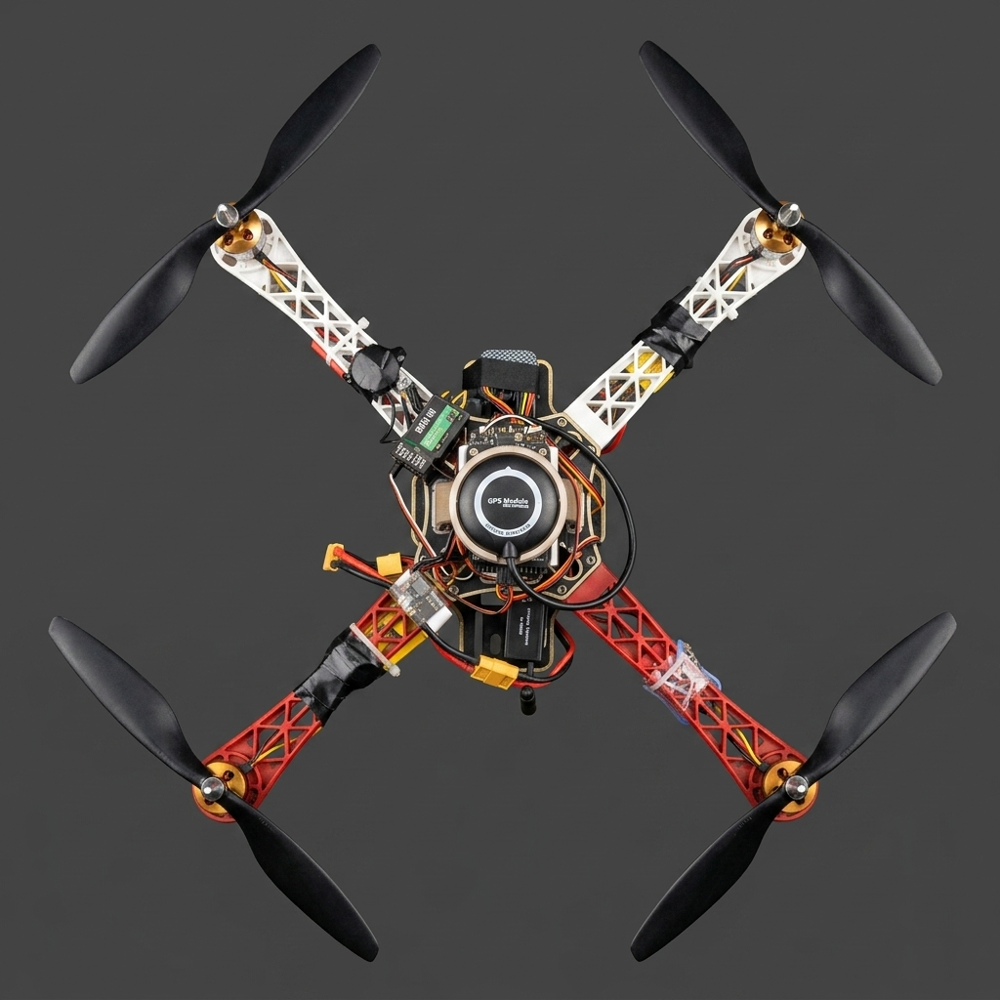
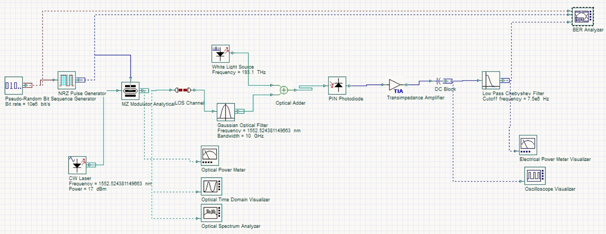
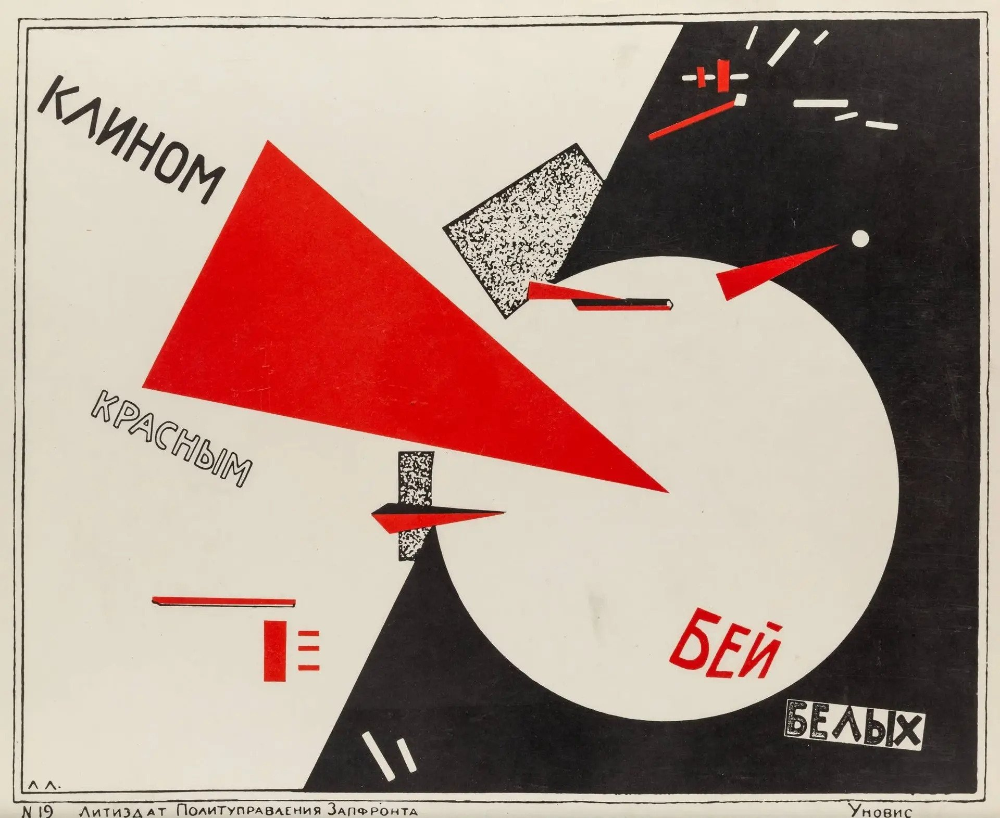
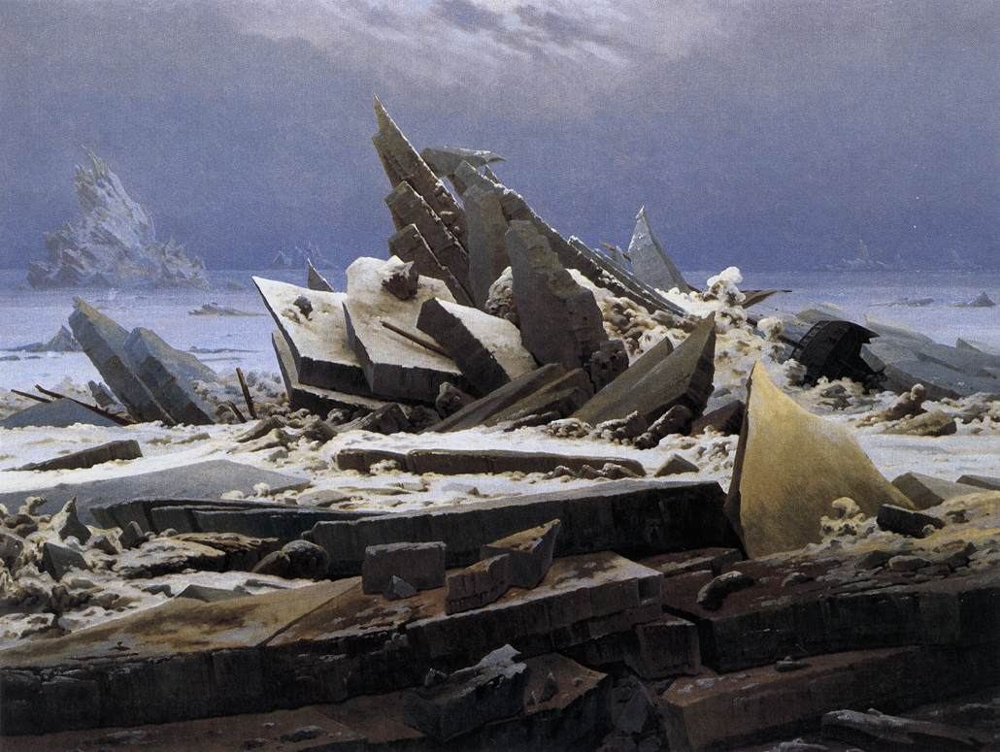
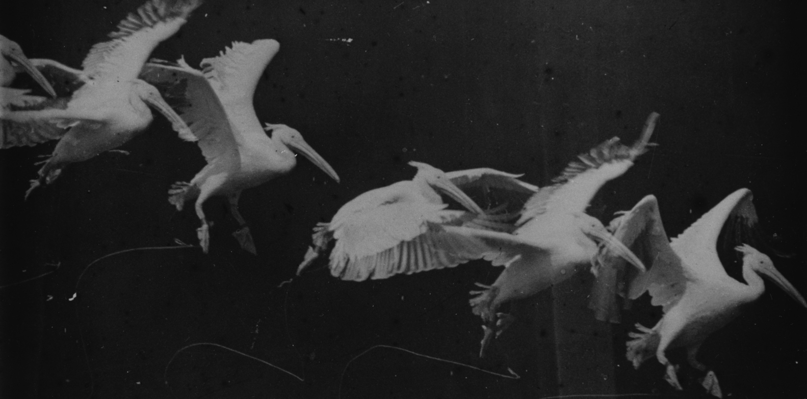
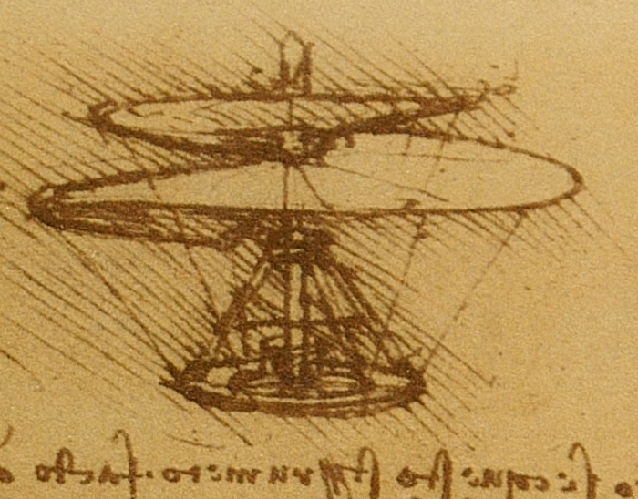
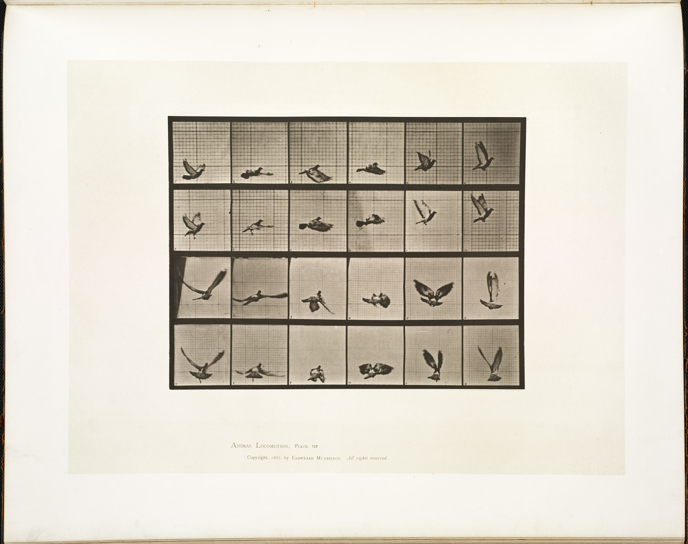

Stories,
mid-flight.
Eight builds hang here before their stories do. The machines get finished first; the words take longer. Open any frame.
At the heart of all beauty lies something inhuman.Camus

F450 Multirotor Drone

Laser-Based LiFi Network

Future Endeavours

Future Endeavours

Future Endeavours

Future Endeavours
